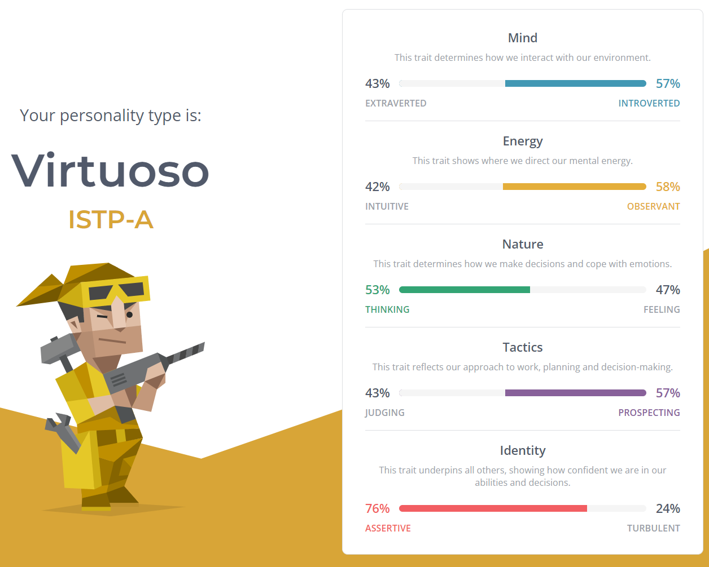
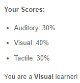

Personal Information:
Hey, my name is Heath (Heath William Yates), my student number is s3942349 and student email: S3942349@student.rmit.edu.au .
Here is a photo of the photo I took for my student card that is now on my student card that my dad took.
I was born in Warrnambool and lived there until I was 18, I am still 18 but now I live in Melbourne so that I can study at RMIT. My ancestors were from Ireland and England but in recent history they are all Australian so therefore I am Australian too.
I did kindergarten for one year before moving through to primary school; prep through to year six, then I managed to get myself into the ‘Select Entry Accelerated Learning Program’ (SEALP) at my highschool. Not all too much of a feat considering that Warrnambool, where I did high school, has a population of around 32,000 people. However I think it is enough of a feat to mention along with it also meaning that I skipped year nine and went straight into year ten in 2018 and doing year twelve twice in 2020 and 2021, both years that were the most affected by covid-19, how lucky for me.
I only speak English, but I am working on learning another.
I used to play field hockey (the pictured one, not on ice. -->)
Eventually I found myself in the fullback position where I was the second last line of defence and had to yell at a lot of people which I can not say was all that bad, and my vocals were as fit as they have ever been, if I try yelling now my voice is only half as loud and then dies about ten minutes later. To rate my skill I will give a small story to you and leave you to decide yourself; Junior State Championships (JSC) two levels below playing for Victoria, and I had gotten in the two times that I tried to, but the third year I was lazy that day and just asked my father to say that I would be interested in playing for the JSC again that year, and I got in over one of my buddies that actually rocked up, until I dropped out because I realised that I did not like travelling for hockey and my buddy took the place that opened up when I left. When covid hit hockey stopped before the season had actually started, and I had started going to the gym so I decided to cut hockey and just go to the gym for exercise instead as I also knew that I would be going to University after I graduated and would not have the same amount of time that I did for playing hockey, therefore gym instead.
I also am a fan of the automobile but I would not drive any with less than four wheels as I have an irrational phobia of going too fast on a bicycle (yes there is a story but I won't go into it.) My dream car is a Mitsubishi Lancer Evolution X.
Interest in IT:
My interest in IT is to make programs that people can enjoy, or at least appreciate, things like Spotify, Discord, YouTube and video games etc. I would say that my interest in IT began when I made my first PC and opened my eyes to the world of PC enthusiasts and what all the different things these people did with their PC’s. My interest was helped along by some of my friends also building their own PC’s and letting me help them, along with my aunt's Husband being an IT professional and allowing me to help him for my school's work experience program. My experience however is limited, except for knowing how to build a computer I have little knowledge of how to make the parts that I would install or how to program using the software they provide, except for a class I did in year 11 where I learnt some basics of databases, UCD/UX, and python programming, which now that I look back on, my teacher knew what to teach to help me out (damn.)
I chose to come to RMIT, because firstly my father went there for both surveying and teaching and he did not seem to hate it, so I would say that is a pretty good reference. Secondly, it is in Melbourne, a three hour journey from where I lived and a city that could easily provide me with the things I need to complete my course over three years. Thirdly, I have a couple of friends that have also come to do university in Melbourne and one of them is enrolled at RMIT. Fourthly, RMIT has the entry requirements that I could achieve given two years of covid riddled years 12 VCE. Finally it is in the name, RMIT: Royal (so cool) Melbourne (this city) Institute (learning stuff) of Technology (that is what I want to learn!)
During my studies I hope that I can learn to create programs and software that people can enjoy. I want to help people have a more concise, effective and enjoyable time using computers and I will fight to try and make that a reality. Although some of the things I learn may not be perfectly tailored to that ideal, like databases and cyber-security, the variety of what I am learning cannot be a negative, so I will do what I can can, or maybe even what I can not to reach the end of 2024 with the skills and knowledge to do what I want with, making software that people can enjoy or appreciate.
Ideal Job:
The Job Link
This job requires the employee to create software via their knowledge of coding. This appeals to me as I want to be able to create software out of my own skills with coding to be able to help people out when using software.
Some of the skills required for this job are knowledge of multiple coding languages such as: TypeScript and C#ReactJS, NodeJS, .NET Core, iOS/Android Java/Kotlin to name a few. This along with the use of microservices and cloud technology. As the role is a junior role, it is not expected to have much, if any, previous experience in a professional setting allowing this job to be great for an entry to an IT career however the are looking for people with some qualifications in IT skills, so a diploma would be a good proof of the qualifications the position is looking to fill.
The skills, experience and qualifications that I currently have would not be able to land me this job, as I have minimal skills and qualification in the broad range of IT abilities and have no previous experience with work similar to the one proposed in the job. However, given three years and my continuous studies I should have the skills and qualifications to be able to apply for this job with confidence. I may also gain experience through my course by being allowed to work in the industry, helping me to gain professional knowledge and have a greater chance of landing the job.
Personal Profile:
In respective order: the Myers-Briggs Test, the Learning Styles Test and finally, the Big 5 Peronalities Test


I'll start with the learning styles and big 5 personalities tests.
Firstly I do not really think that learning styles are anything more than a preference, one might like to learn via visual stimuli however the learning ability does not change. The only possible change in learning that would occur as a result of different styles would be if the subject did not pay attention due to the style presented. This video does a great job of explaining this: The Biggest Myth In Education
The five personalities test is just a rough estimation of the principles of a person. Sixty questions is not enough to be able to define someone's entire personality, although the test may hold some truth, personally I would not rely on online internet tests to tell me who I am and how I act, that is for oneself to figure out, just look at how long some monks go to find themselves, 10 minutes and sixty questions is not going to be enough.
Finally we have the 16 personalities test which is the most accurate out of all the three that I have taken. Once again there is truth in the results, although sometimes it is fuzzy around the edges in defining the subject. If there are only sixteen personalities on this planet, then I’ll be, humans are too diverse to be put into a categorization of only sixteen. The quiz is also slightly flawed, people are taking the test to find out who they are, or what they are, and yet to complete the test you must answer questions that rely on the fact that you have already looked inward and found out who you are. It seems counter-intuitive to me, like people just want to be labelled as something so they can talk about how unique their personality is.
Like I said there lies some truth in these tests, and if the tests relay that you hate people, because you told it you hate people, the testee may not work very well in a team. I personally would take these results into a very broad view and only use significant differences to manage the composition of a team.
Project Idea:
Creating a physics engine.
“A physics engine is computer software that provides an approximate simulation of certain physical systems, such as rigid body dynamics (including collision detection), soft body dynamics, and fluid dynamics, of use in the domains of computer graphics, video games and film (CGI)."
[Wikipedia Contributors. (2019, October 13). Physics engine. Wikipedia; Wikimedia Foundation. https://en.wikipedia.org/wiki/Physics_engine]
This project is useful as physical simulations of the real world have many applications, it can aid in predictions for the real world, such as meteorology, astrology, engineering and more. Not only can it help predict real world situations, but it can also simulate situations for other software, such as video games. This project will be useful as as software develops, the capability for many difficult mathematical equations to be solved quickly increases. Like most projects, they get better over iterations, time and time again reworking and improving them to be the best that they can, and with software improving constantly it allows constant improvement of physics engines as well, something this project aims to help with; helping to improve physics engines.
The features of this project are vast, as the potential scope for the project is a universal simulation, going from the smallest atom or subatomic particle all the way to entire galaxies and the entirety of the universe. Of course this scope cannot be achieved with current technology, but it should be strived to make it as similar to that as possible, perhaps making the laws of physics first, things like gravity, newton's law, thermodynamics and ect. Main features of the engine should be the realistic simulation of matter interacting with each other and with gravity, things like waves, spills and mixing would simulate liquids interacting with, respectively, gas, solids and other liquids. Structural integrity, pressure and give are all things that solids will do when interacting with gravity and other solids. The list could go on but I will limit it there. The aim of the project should be to create an engine capable of simulating matter interactions to the specified degree, with either realism or exaggeration in mind. Things like ragdoll physics can be programmed into any matter the software wants, not only what the engine intends for. If a user wants to put ragdoll physics on a concrete building, then the engine should be capable of allowing them to do so, even if it is not an accurate real world simulation. Should gravity affect some things and not others, the engine should allow this possibility as well. The engine should also be compatible with many different programming languages as this will only improve the usability and application potential of the engine helping users to implement it into their software. The engine should also be capable of running any level of simplicity, it should run in three dimensions or two if required, it should be able to just run simple mathematical equations, like parabolas all the way up to highly complex simulations like explosions and the effect that it has on the surrounding objects.
Some examples of software that use physics engines are; Angry Birds, a simple application that calculates parabolas for the birds flight path, the speed that they hit the ground or structure and the force that they pass on to the structure often resulting in a rebound as the force pushes the two objects apart. Another example could be Assetto Corsa, a driving simulation game that would have to calculate more complex things like the difference of grip on the ground type with different tires while going different speeds to calculate the amount of slip the car will experience.
There are of course more simple and more complex uses of physics engines, and the only use isn't inside of video games as I have biasedly used two video game examples.
The tools and technologies to create a physics engine is any type of coding language that allows mathematical equations to be used. Languages like python and C# or most others will allow for mathematical equations and therefore are capable of simulating physics. There will be a lot of fairly difficult mathematics involved for high end physics simulations however there are also plenty of far more simple ones too, perhaps just using simple functions, the harder part being to implement them into the programming language and output the desired result. There are many open source coding languages as well as other open source physics engines to seek help from.
The capabilities of the simulation depend on the skills of the programmer, if they are poor in their mathematics, the engine will be restricted to simpler calculations. If the programmer is not proficient in the coding language of the code they are creating, the physics engine will most likely be glitchy and slow, if work at all. There are hardware requirements however almost all computers have the ability to run at least feasible levels of realistic simulation just by using the CPU and GPU processing power. The skills required to create a simple engine are not too hard to come by however as the complexity of the simulation increases so does the rarity of the skills required to create it.
If this project is successfully created it can aid many different users in creating software that will use the engine, should it be a video game, real world simulation, predictions like the weather and many more things. It should function as a tool to help users more effectively and efficiently simulate what they want, how they want, when they want. As stated earlier, projects like this improve over iterations and new ideas being used, this program will not be the best there could possibly be, as computing continues to improve the software will soon be outdated, but hopefully it will allow users in the present to accurately simulate what they desire and be used as a stepping stone for future projects to help them build something better.